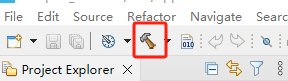
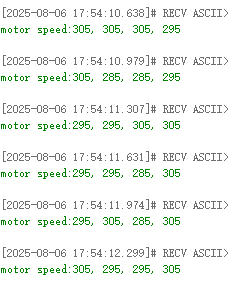

PID-регулирование скорости мотора
-
- Цель эксперимента
-
- Подключение оборудования
-
- Анализ основного кода
-
- Компиляция, загрузка и прошивка firmware
-
- Результаты эксперимента
1. Цель эксперимента
Использование интерфейса мотора с энкодером на плата управления STM32 и изучение управления скоростью мотора на основе количества импульсов энкодера в сочетании с PID-алгоритмом.
2. Подключение оборудования
Как показано на рисунке ниже, плата управления STM32 имеет четыре встроенных интерфейса управления моторами с энкодером. Для этого требуется дополнительно подключить мотор с энкодером. Интерфейс управления моторами поддерживает моторы с энкодером типа 520. Поскольку моторы с энкодером требуют высокого напряжения и тока, их необходимо питать от батареи.
Подключите кабель Type-C к USB-порту компьютера и порту USB Connect на плата управления STM32.
Соответствие названий четырёх интерфейсов моторов: переднее левое колесо → M1, заднее левое колесо → M2, переднее правое колесо → M3, заднее правое колесо → M4.
3. Анализ основного кода
Путь к исходному коду программы:
Board_Samples/STM32_Samples/Motor_PID
Аппаратная конфигурация мотора с энкодером представляет собой сочетание настроек мотора и энкодера.

В этом примере для управления мотором используется инкрементальный PID-алгоритм. Определена структура motor_pid_t для хранения параметров, связанных с PID, и структура motor_data_t для хранения параметров, связанных со скоростью мотора.
typedef struct _pid_t
{
float target_val; // целевое значение
float pwm_output; // выходное значение ШИМ
float Kp,Ki,Kd; // пропорциональный, интегральный и дифференциальный коэффициенты
float err; // значение отклонения (ошибки)
float err_last; // предыдущее значение отклонения
float err_next; // следующее значение отклонения (для инкрементальной формы)
float integral; // значение интеграла (для позиционной формы)
} motor_pid_t;
typedef struct _motor_data_t
{
float speed_mm_s[4]; // входное значение — скорость, рассчитанная по энкодеру
float speed_pwm[4]; // выходное значение — значение ШИМ, рассчитанное PID-регулятором
int16_t speed_set[4]; // заданное значение скорости
} motor_data_t;

При инициализации моторов PID-параметры всех четырёх моторов устанавливаются в значения по умолчанию.
void PID_Param_Init(void)
{
for (int i = 0; i < MOTOR_ID_MAX; i++)
{
pid_motor[i].target_val = 0.0;
pid_motor[i].pwm_output = 0.0;
pid_motor[i].err = 0.0;
pid_motor[i].err_last = 0.0;
pid_motor[i].err_next = 0.0;
pid_motor[i].integral = 0.0;
pid_motor[i].Kp = PID_DEF_KP;
pid_motor[i].Ki = PID_DEF_KI;
pid_motor[i].Kd = PID_DEF_KD;
}
}
Реализация функции инкрементального PID-алгоритма.
float PID_Incre_Calc(motor_pid_t *pid, float actual_val)
{
pid->err = pid->target_val - actual_val;
pid->pwm_output += pid->Kp * (pid->err - pid->err_next)
+ pid->Ki * pid->err
+ pid->Kd * (pid->err - 2 * pid->err_next + pid->err_last);
pid->err_last = pid->err_next;
pid->err_next = pid->err;
if (pid->pwm_output > MOTOR_MAX_SPEED) pid->pwm_output = MOTOR_MAX_SPEED;
if (pid->pwm_output < -MOTOR_MAX_SPEED) pid->pwm_output = -MOTOR_MAX_SPEED;
return pid->pwm_output;
}
Передаётся параметр скорости, полученный от энкодера мотора, и с помощью инкрементального PID-алгоритма рассчитывается значение ШИМ для мотора.
void PID_Calc_Motor(motor_data_t* motor)
{
for (int i = 0; i < MOTOR_ID_MAX; i++)
{
motor->speed_pwm[i] = PID_Incre_Calc(&pid_motor[i], motor->speed_mm_s[i]);
}
}
Установка целевого значения PID.
void PID_Set_Motor_Target(uint8_t motor_id, float target)
{
if (motor_id > MOTOR_ID_MAX) return;
if (motor_id == MOTOR_ID_MAX)
{
for (int i = 0; i < MOTOR_ID_MAX; i++)
{
pid_motor[i].target_val = target;
}
}
else
{
pid_motor[motor_id].target_val = target;
}
}
Сброс PID-параметров.
void PID_Clear_Motor(uint8_t motor_id)
{
if (motor_id > MOTOR_ID_MAX) return;
if (motor_id == MOTOR_ID_MAX)
{
for (int i = 0; i < MOTOR_ID_MAX; i++)
{
pid_motor[i].pwm_output = 0.0;
pid_motor[i].err = 0.0;
pid_motor[i].err_last = 0.0;
pid_motor[i].err_next = 0.0;
pid_motor[i].integral = 0.0;
}
}
else
{
pid_motor[motor_id].pwm_output = 0.0;
pid_motor[motor_id].err = 0.0;
pid_motor[motor_id].err_last = 0.0;
pid_motor[motor_id].err_next = 0.0;
pid_motor[motor_id].integral = 0.0;
}
}
Установка скорости работы мотора с энкодером с преобразованием параметра скорости мотора в целевое значение PID. Диапазон параметра скорости мотора связан с самим мотором с энкодером и колёсами; например, диапазон значений speed_m — [-700, 700].
void Motion_Set_Speed(int16_t speed_m1, int16_t speed_m2, int16_t speed_m3, int16_t speed_m4)
{
g_start_ctrl = 1;
motor_data.speed_set[0] = speed_m1;
motor_data.speed_set[1] = speed_m2;
motor_data.speed_set[2] = speed_m3;
motor_data.speed_set[3] = speed_m4;
for (uint8_t i = 0; i < MOTOR_ID_MAX; i++)
{
PID_Set_Motor_Target(i, motor_data.speed_set[i]*1.0);
}
}
Считывание скорости мотора: скорость мотора рассчитывается на основе данных, полученных энкодером, и длины окружности колеса; значение скорости сохраняется в переменную speed_motors.
void Motion_Get_Speed(int16_t* speed_motors)
{
Motion_Get_Encoder();
float circle_m = Motion_Get_Circle_M();
float speed_m1 = (g_Encoder_All_Offset[0]) * 100 * circle_m / ENCODER_CIRCLE;
float speed_m2 = (g_Encoder_All_Offset[1]) * 100 * circle_m / ENCODER_CIRCLE;
float speed_m3 = (g_Encoder_All_Offset[2]) * 100 * circle_m / ENCODER_CIRCLE;
float speed_m4 = (g_Encoder_All_Offset[3]) * 100 * circle_m / ENCODER_CIRCLE;
speed_motors[0] = speed_m1 * 1000;
speed_motors[1] = speed_m2 * 1000;
speed_motors[2] = speed_m3 * 1000;
speed_motors[3] = speed_m4 * 1000;
if (g_start_ctrl)
{
motor_data.speed_mm_s[0] = speed_m1*1000;
motor_data.speed_mm_s[1] = speed_m2*1000;
motor_data.speed_mm_s[2] = speed_m3*1000;
motor_data.speed_mm_s[3] = speed_m4*1000;
PID_Calc_Motor(&motor_data);
}
}
Функция Motion_Handle вызывается каждые 10 миллисекунд в цикле для считывания, расчёта и регулирования скорости мотора. Для наглядности добавлена функция вывода значения скорости мотора через последовательный порт.
void Motion_Handle(void)
{
Motion_Get_Speed(speed_data);
debug_count++;
if (debug_count >= 30)
{
debug_count = 0;
printf("motor speed:%d, %d, %d, %d\n", speed_data[0], speed_data[1],
speed_data[2], speed_data[3]);
}
if (g_start_ctrl)
{
Motion_Set_Pwm(motor_data.speed_pwm[0], motor_data.speed_pwm[1],
motor_data.speed_pwm[2], motor_data.speed_pwm[3]);
}
}
Инициализируйте мотор с энкодером и PID-параметры в App_Handle, а затем установите скорость всех четырёх моторов равной 300, что соответствует скорости движения вперёд 0,3 м/с.
void App_Handle(void)
{
Motor_Init();
Encoder_Init();
PID_Param_Init();
HAL_Delay(1000);
Motion_Set_Speed(300, 300, 300, 300);
while (1)
{
App_Led_Mcu_Handle();
Motion_Handle();
HAL_Delay(10);
}
}
4. Компиляция, загрузка и прошивка firmware
Выберите проект для компиляции в панели управления файлами STM32CubeIDE и нажмите кнопку компиляции на панели инструментов, чтобы начать сборку.
Если ошибок и предупреждений нет, компиляция завершена.
Нажмите и удерживайте кнопку BOOT0, затем нажмите кнопку RESET для сброса, отпустите кнопку BOOT0, чтобы войти в режим прошивки через последовательный порт. Затем используйте инструмент прошивки через последовательный порт, чтобы записать firmware на плату.
Если у вас есть ST-LINK или J-Link, можно также использовать STM32CubeIDE для прошивки firmware одним нажатием — это более удобно и быстро.


5. Результаты эксперимента
Примечание: поскольку мотор начинает двигаться сразу после загрузки программы, сначала подвесьте робота или мотор в воздухе, чтобы он не начал ездить самопроизвольно.
Светодиод MCU_LED мигает каждые 200 миллисекунд.
Робот движется вперёд со скоростью 0,3 м/с.
Откройте программу-терминал последовательного порта и убедитесь, что все четыре мотора работают со значением около 300 — это нормально.

Об отклонении скорости: из-за различий между отдельными моторами и аппаратными факторами, такими как точность захвата импульсов энкодера, работа PID-алгоритма — это динамический процесс регулирования ШИМ мотора, поэтому нормальным считается положение, при котором скорость близка к заданному значению.
При этом можно приложить некоторое сопротивление к колёсам, чтобы проверить, способен ли PID-алгоритм удерживать скорость робота на нужном уровне. Если после добавления сопротивления скорость по-прежнему удерживается около заданного значения — это нормально.